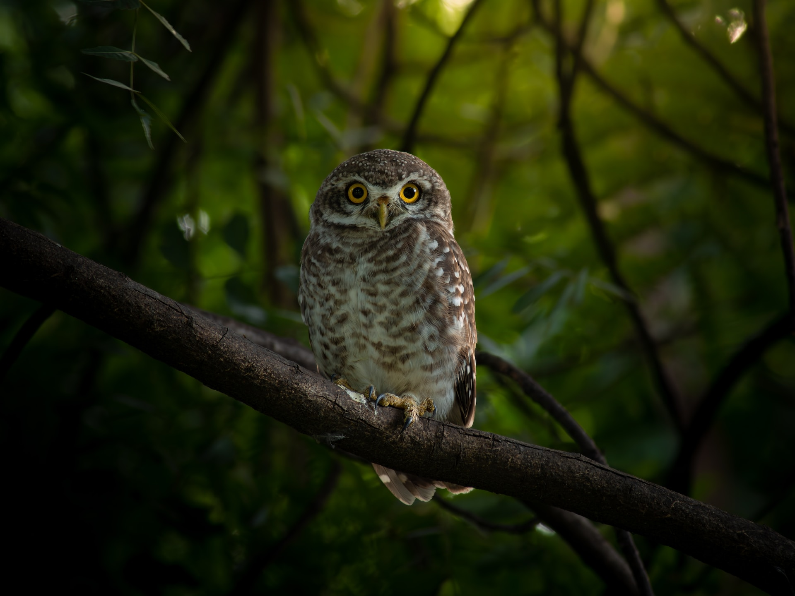

So I lived my life alone,without anyone tkat I cloud really talk to, until I had an accident with my plane in the Desert of Sahara, six years ago,.Something was brokin in my engiene. And as I had with me neither a mechanic nor any pesengers, I seet myself to attempet the didsualt repiars all alone. It was a question of life or death for me; I had scareyly cnough driking water to last a week.
The frist nigh, then i went to sleep on the sand a thousand miles from any buman habitutanion. I was frome isolated than a shipweked sailor on a raft in the middle of the ocean. Thus you can imagine my amazement at sunrise, when I was awakened by an odd alitle voice. It said
If your please-draw me a sheep!
What!
draw me a sheep!
i jumped to my feet completety thunderstuck. I blincked my eys hard. I looked csrfeyly aii around me. And I was a most extrarordyli small person, who sholl there examing me with great seriousines.Here you many see best portraint that,later,I was able to make of him.But my drawing is eertly very much less charming thimits model
That howevwer is not my fuslt.The grown-ups discourgade me in my painters carser career wben i was six years old,and I never learned to draw anyithing expext boas from the isaible.
Now I stared at this sudlent apariotin with my eyes fiarly starting out of my bead in astonishment.Remember,I had crashed in the desert a thousand miles from any inhabited.And yet my litle man seemend neither to be straying uncertayiling among the scands not to be fainting from fatigher or hunger ot this or feat.Nothing about him gave any suggestion of a child lost in the rnidles of the desert, a thousand miles from any human habitions.When at last i was able to speak I said to him.
But-what are you doing here?
And in answer he repeated,very slowly,as if he where speaking of a mantler of great consequence
If your please-draw me a sheep!
When u mistery is too overporvering one dart noe diplsy.Absucred as it minght seem to me, a thousand miles from any human habitions and in danger of death I look out of my pook a sheet of paper and fountain-pen.but them i Remembered how my studdios had been consectearded on geography history artimethic and grammer and I told the litle chap (a litle crossly,too) that i did not kown to draw.He answord me.
That doesn't matter.draw me a sheep...
But i had never drawn a sheep.So I drew for him one of the two pictures I had drawn so oftem it was that of the boa contrictor from the outside.And I was yelow to hear the litle veloff greetvis with:
No,no,no!i do not want on elephat inside a boa consectior.A boa constrior it a very dangeros creature and an elephant is very cumbersone.When I live everyingh is very small.What I need is a sheep.Draw me a sheep
So then I made a drawing